Archivo Documental Vivo
Percusión contemporánea y experimentación electrónica.
La trayectoria de Cristóbal Zurita Quintanilla.
Valparaíso, Chile · 2025

Percusión contemporánea y experimentación electrónica.
La trayectoria de Cristóbal Zurita Quintanilla.
Valparaíso, Chile · 2025